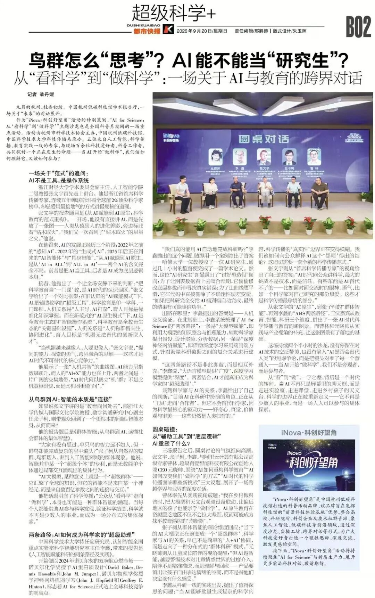
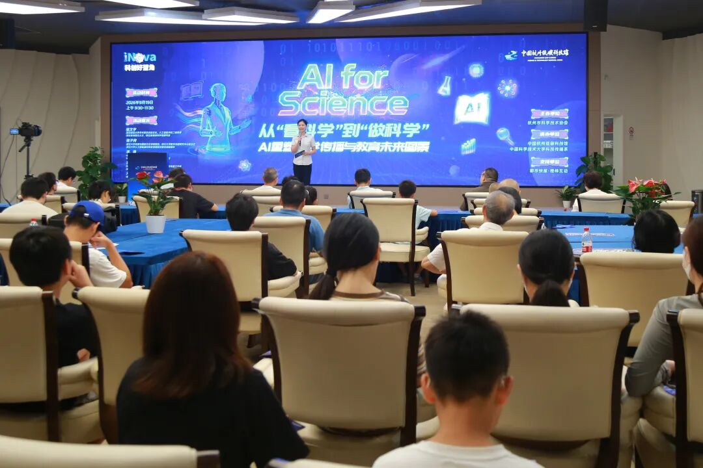
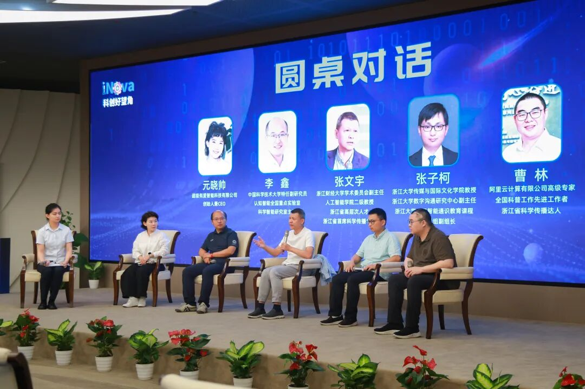
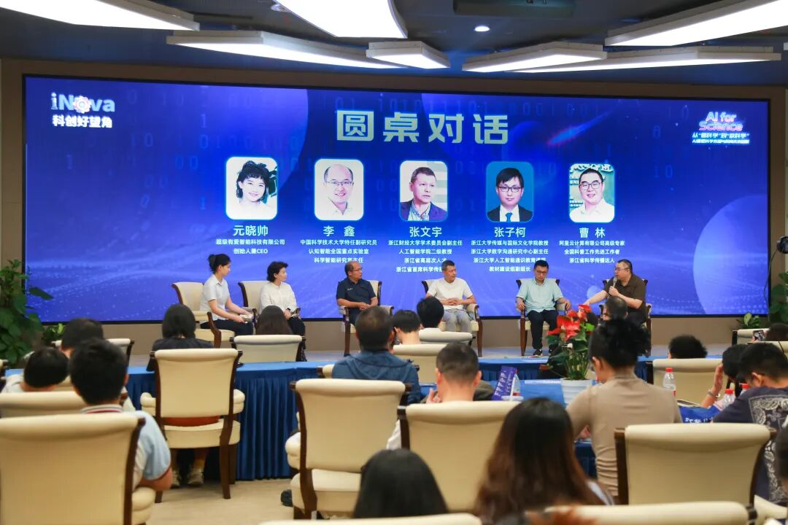
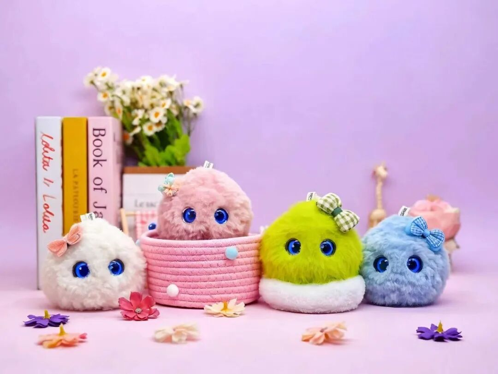

好消息要大声说——超级球球又又又上报啦！
2026年9月20日，《都市快报》B02版"超级科学+"以《从"看科学"到"做科学"：一场关于AI与教育的跨界对话》为题，整版报道了9月19日在中国杭州低碳科技馆举行的"AI for Science"主题沙龙。超级有爱智能科技创始人兼CEO元晓帅博士，与浙江财经大学张文宇教授、浙江大学张子柯教授、阿里云高级专家曹林、中国科学技术大学李鑫副研究员同台亮相，共话AI时代的科学传播与科学教育。
本次沙龙聚焦AI与科学传播、科学教育的前沿议题，设置主旨报告与圆桌对话等环节，吸引了科技爱好者、AI创业者、高校师生、科普工作者等百余位观众现场参与。

一线观察：孩子用AI，不是工具，是伙伴
圆桌对话中，元晓帅博士分享了一个打动全场的一线观察：
成年人使用AI是作为工具、为了提效；而孩子使用AI，本质上是作为伙伴、陪伴成长——孩子问AI的每一个问题，背后可能是不安、难过，或是还没学会思考的困惑。
正因如此，儿童AI不应该只是一台更聪明的"回答机"。超级球球想建立的，是从"答案检索逻辑"走向"成长陪伴逻辑"：从孩子的行为与情绪出发，理解背后的状态，引导他表达、引导他思考、鼓励他行动，再长期陪伴他的每一点变化。
"AI不应该替孩子思考、替孩子解决问题，而是让孩子在AI的陪伴下，逐渐形成自己的表达能力、情绪调节能力、思考能力和行动能力。我们做的从不是一个AI问答机，而是一个陪孩子完成成长的AI伙伴。"元晓帅博士说。

"识别可以精准，但表达必须克制"
谈到儿童AI如何在"精准"与"温度"之间把握，元晓帅博士提出了一条清晰的伦理边界：
孩子是一个"becoming"的人，性格、情绪、认知都在发展变化。今天的数据可以帮助我们理解今天的孩子，但不能用来定义明天的孩子。
识别可以精准，但表达必须克制；准确可以在后台，但陪伴必须在前台。
他举了一个例子：孩子今天不太想讲话，AI不该直接下判断"你今天情绪很低落"，而应该说——"你好像今天不太想说话，发生什么了吗？如果你愿意，可以慢慢告诉我。"
前者是在定义孩子，后者是在邀请孩子理解自己。在元晓帅博士看来，儿童AI真正的"精准"，是越来越准确地理解孩子，同时给他足够的空间去成为他自己——这本身就是"温度"。

这只是开始
媒体报道的是一场沙龙，但我们看到的，是越来越多家庭开始关注孩子的情绪成长与心理健康。
超级球球将继续以有爱的AI陪伴，让科技真正走进孩子的日常——用AI让心理健康融入日常生活，让孩子愿意开口，让家长更懂孩子。
感谢《都市快报》的关注与记录，也感谢每一位相信"有爱的AI"的家长和孩子。我们继续前行。

关于超级球球
超级球球是超级有爱智能科技自主研发的AI儿童成长陪伴机器人，聚焦3至12岁儿童的情绪成长与心理健康，以"让孩子愿意开口，让家长更懂孩子"为核心理念，通过情绪识别、共情交互与长期陪伴，培养孩子的表达力、情绪力与韧性力。
未来，超级球球将继续以有爱的AI陪伴，让科技真正走进孩子的日常——用AI让心理健康融入日常生活。

（点击"在看"，把这份成长的力量分享给更多家庭💛）